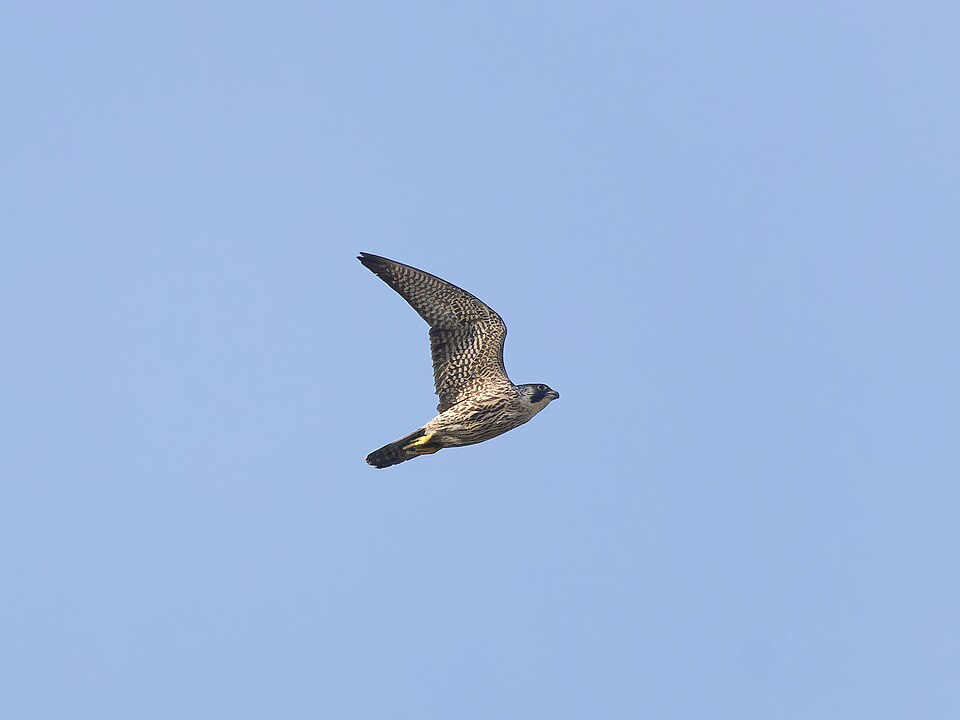
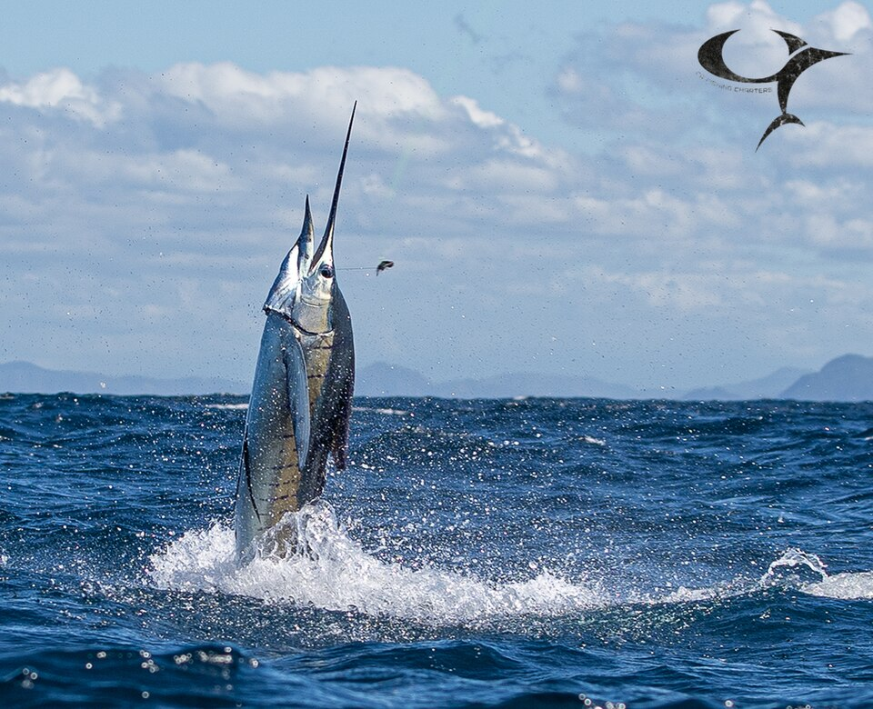

Karada çita, havada dalış yapan gökdoğan, denizde ise çoğu listede yelken balığı öne çıkar. Ama bu üç “rekor” aynı tür ölçüm değil: çita yere basarak kısa süreli sprint atar, gökdoğan yerçekiminin de yardımıyla dik dalar, balıkların hızıysa su altında ölçülür ve çoğu zaman avlanma anına dayanır. Bu nedenle en hızlıları sıralarken yalnızca büyük sayıya değil, o sayının nasıl elde edildiğine de bakmak gerekir.
Karada: çita, kısa mesafenin sprinteri

Çita (Acinonyx jubatus) en hızlı kara hayvanı olarak bilinir. Uzun bacakları, esnek omurgası ve denge sağlayan kuyruğu hızlanıp yön değiştirmesine yardım eder; ancak bu yapı uzun süreli koşu için değil, avın peşinde kısa ve yoğun bir hamle için uygundur. San Diego Zoo, çitanın en yüksek hızını saatte 70 mile, yani yaklaşık 112 kilometreye kadar verir.[1]
Bu yaygın rakamı, doğadaki ölçümle karıştırmamak önemli. Wilson ve çalışma arkadaşları Botsvana’da beş yabani çitayı GPS ve hareket sensörleriyle izledi; 367 av koşusunda kaydedilen en yüksek hız saatte 93 kilometreydi. Çalışma, bu hayvanların her avda rekor hızına çıkmadığını da gösterdi: çoğu kovalamaca daha düşük hızlarda gerçekleşti. Dolayısıyla 112 km/sa sıkça aktarılan üst sınır; 93 km/sa ise belirli bir saha araştırmasında gerçekten kaydedilmiş tepe değerdir. İkisi farklı şeyleri anlatır.[2]
Havada: gökdoğan, dalışın gücüyle

Gökdoğan (Falco peregrinus) avını yakalamak için yüksekten hızla aşağı süzülür. Bu dik dalış, İngilizcede “stoop” diye anılır ve kuşu yatay uçuşundan çok daha hızlı hâle getirir. Audubon, gökdoğanın böyle bir dalışta yaklaşık saatte 200 mile — yaklaşık 320 km/sa — ulaşabileceğini ihtiyatlı biçimde belirtir; National Geographic de avına dalarken 200 mil/saatin üzerine çıkabildiğini aktarır.[3][4]
Bu yüzden gökdoğan “dünyanın en hızlı hayvanı” diye anıldığında, kastedilen genellikle bir dalış anıdır; düz uçuşta kanat çırparak ulaştığı hız değildir. Hızın kesin değeri de kuşun dalış açısına, rüzgâra ve ölçüm yöntemine bağlıdır. Başka bir deyişle, rekor etkileyicidir ama çitanın koşu hızıyla bire bir aynı koşullarda yapılmış bir yarış değildir.
Denizde: yelken balığı ve ölçülmesi zor rekor

Yelken balığı (Istiophorus platypterus), iğne biçimli uzun çenesi ve büyük sırt yüzgeciyle tanınır; popüler listelerde çoğu zaman denizin en hızlı balığı diye geçer. Ona atfedilen saatte 100 kilometreyi aşan hızlar güvenilir bir deniz rekoru gibi sunulmamalı. Hakemli çalışmalarda aktarılan eski tahminlerden biri yaklaşık 35 m/s, yani saatte 126 kilometre düzeyindeydi; bunların bir bölümü oltaya takılmış balıkların misinayı boşaltma hızından türetilmişti. Balığın gerçek yüzme hızıyla misinanın sudaki hareketi aynı ölçüm değil.[5]
2015’te yüksek hızlı video ve ivmeölçer kullanan bir araştırma, avlanma sırasında yelken balıklarının yaklaşık 7 m/s, yani saatte 25 km civarında kısa hız patlamaları yaptığını ve ölçülen hızın 10 m/s’yi aşmadığını bildirdi. 2016’da yayımlanan başka bir çalışma, kas kasılma süresinden hareketle yelken balığının ulaşabileceği teorik üst hızı yaklaşık 8,3 ± 1,4 m/s — kabaca 30 km/sa — olarak tahmin etti. Bu ikinci sayı doğrudan bir yarışta kronometreyle ölçülmüş değer değil, fizyolojik verilerden çıkarılmış bir tahmindir.[5][6]
Bu çalışmalar yelken balığının hızlı bir yüzücü olduğunu destekliyor; fakat “bütün deniz hayvanları arasında tartışmasız en hızlı” olduğunu kanıtlamıyor. Farklı türler, farklı derinlikler ve farklı ölçüm yöntemleri karşılaştırılmadan okyanusun kesin şampiyonunu ilan etmek doğru olmaz. En güvenli ifade şu: Yelken balığı denizin en hızlıları arasında sayılır, ancak internette dolaşan en yüksek hız rakamları sağlam ölçümle doğrulanmış değildir. Türün biyolojisi ve dağılımı için Florida Doğa Tarihi Müzesi’nin balık profiline de bakılabilir.[7]
Üç ortam, üç farklı hız tanımı
| Ortam | Öne çıkan hayvan | Kaynaklarda geçen değer | Önemli not |
|---|---|---|---|
| Kara | Çita | 93 km/sa saha kaydı; 112 km/sa sık aktarılan üst hız | Av sırasında kısa sprint; değerler farklı kaynak ve yöntemlerden geliyor. |
| Hava | Gökdoğan | Dalışta yaklaşık 320 km/sa | Dik dalış hızı; yatay uçuş hızı değil. |
| Deniz | Yelken balığı | Av hamlesinde yaklaşık 25 km/sa; kas verilerinden yaklaşık 30 km/sa tahmin | Yüksek popüler rekor iddiası doğrulanmış ölçüm değil; deniz canlılarının kesin sıralaması belirsiz. |
Hız rekorlarında neden temkinli olmak gerekir?
Bir hayvanın “en yüksek hızı”, tek başına sabit bir biyolojik özellik gibi düşünülemez. Ölçümün kısa bir sıçramayı mı, uzun süre korunan hızı mı anlattığı; hayvanın avlanıp avlanmadığı; hızın doğrudan sensörle mi yoksa dolaylı bir hesapla mı bulunduğu sonucu değiştirir. Gökdoğanın dalışı yerçekimiyle hız kazanır, çitanın ısırıp yön değiştirdiği av kovalamacası düz bir pist yarışı değildir, balığın hareketini su içinde izlemek ise teknik olarak güçtür.
Bu yüzden kısa cevap hâlâ akılda kalıcı: karada çita, havada dalan gökdoğan, denizde ise çoğu zaman yelken balığı. Daha doğru cevap ise küçük bir dipnot taşır: rekorlar ancak hangi hareketin, hangi koşulda ve nasıl ölçüldüğü söylendiğinde anlam kazanır. Hız, doğada bir kupa değil; avı yakalamaya, tehlikeden sıyrılmaya ve enerji harcamaya dair bir uyumdur.
Kaynaklar ve ileri okuma
- San Diego Zoo Wildlife Alliance, “Cheetah”; çitanın kısa mesafedeki hızı ve bedensel uyumları.
- A. M. Wilson ve diğerleri, “Locomotion dynamics of hunting in wild cheetahs,” Nature 498 (2013), 185–189. DOI: 10.1038/nature12295.
- National Audubon Society, “Peregrine Falcon”; dalış hızına ilişkin temkinli değerlendirme.
- National Geographic, “Peregrine Falcon”; av dalışı ve 200 mil/saat üzerindeki hız iddiası.
- Stefano Marras ve diğerleri, “Not So Fast: Swimming Behavior of Sailfish during Predator–Prey Interactions using High-Speed Video and Accelerometry,” Integrative and Comparative Biology 55, no. 4 (2015), 719–727. DOI: 10.1093/icb/icv017.
- Morten B. S. Svendsen ve diğerleri, “Maximum swimming speeds of sailfish and three other large marine predatory fish species based on muscle contraction time and stride length: a myth revisited,” Biology Open 5 (2016), 1415–1419. DOI: 10.1242/bio.019919; açık erişimli makale.
- Florida Museum of Natural History, “Sailfish”; yelken balığının tür bilgileri.
- Hein Waschefort, “Cheetah chase”, Wikimedia Commons, CC BY-SA 3.0.
- Tisha Mukherjee, “Peregrine Falcon in Baruipur February 2026”, Wikimedia Commons, CC BY-SA 4.0.
- Galomalavasi, “Sailfish Costa Rica”, Wikimedia Commons, CC BY-SA 4.0.
Hızlar kaynaklardaki ölçüm ve tahmin türleri korunarak verildi; farklı ortamlardaki değerler doğrudan, eş koşullarda yapılmış bir yarışın sonuçları değildir. Yelken balığının eski rekor iddiaları, daha yeni doğrudan gözlemler ve fizyolojik tahminlerle aynı kesinlikte sunulmadı. Kaynaklara 13 Kasım 2026 tarihinde erişildi.